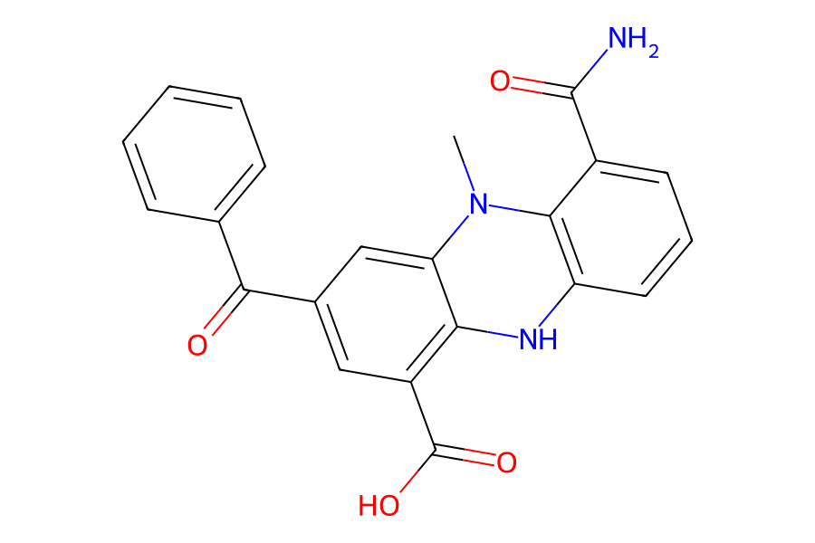
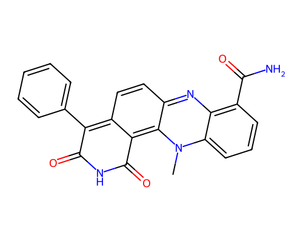
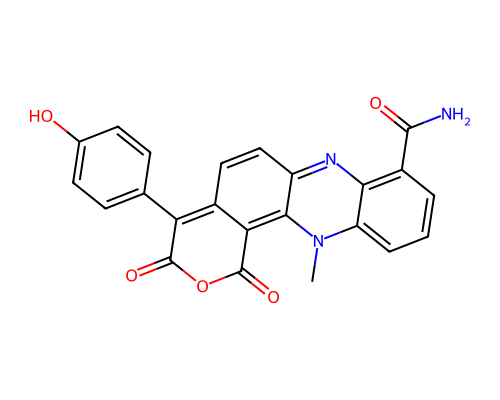

Recorded genus · Dermacoccus
Follow source profiles to their compounds, recorded activities and original evidence.
Sources / Bacteria / Recorded genus
Classification follows stored source-name assignments; original identification and evidence states are retained. Activity counts cover associated compounds and do not establish taxon-specific activity.
Browse these source cardsConnection network
Click a node to expand its connections. Drag nodes to arrange the view.
Dermacoccus
Only the current neighbourhood is shown. Search or use Next to find other nodes. Shared products have one node and multiple source links. Mixed recorded source labels can occur under more than one genus.
Browse the same connections as lists
1 Recorded genus
2 Source / strain
Select a genus
Sources in this classification appear here.
3 Products
Select a source
See the products and their stored structures.
Select a product to view recorded activity, experimental systems and original evidence.
Lines show stored associations. Node distance does not represent similarity or evidence strength. Product activities are compound-level records; they are not automatically attributable to the selected strain or taxon. Target annotations do not establish direct binding. Original review states and restrictions are retained.
Source profiles
| Source / strain | Recorded genus | Compounds | Source evidence records |
|---|---|---|---|
| Dermacoccus abyssi · MT1.1 and MT1.2 | Dermacoccus | 10 | 10 checked |
| Dermacoccus abyssi · MT1.1T | Dermacoccus | 1 | 1 checked |
Associated compounds
| Structure | Compound | Formula | Classification | Activity records | Admitted evidence rows |
|---|---|---|---|---|---|
 Structure image unavailable Structure image unavailable | Dermacozine AConnections → | C15H14N4O2 | Alkaloid | 4 | 4 |
 Structure image unavailable Structure image unavailable | Dermacozine BConnections → | C22H18N4O3 | Alkaloid | 1 | 1 |
 Structure image unavailable | Dermacozine CConnections → | C22H17N3O4 | Alkaloid | 1 | 1 |
 Structure image unavailable Structure image unavailable | Dermacozine DConnections → | C24H19N3O5 | Alkaloid | 1 | 1 |
 Structure image unavailable | Dermacozine EConnections → | C23H16N4O3 | Alkaloid | 0 | 0 |
 Structure image unavailable Structure image unavailable | Dermacozine FConnections → | C23H15N3O4 | Alkaloid | 1 | 1 |
 Structure image unavailable | Dermacozine GConnections → | C23H15N3O5 | Alkaloid | 1 | 1 |
 Structure image unavailable Structure image unavailable | Dermacozine HConnections → | C16H13N3O4 | Alkaloid | 1 | 1 |
 Structure image unavailable Structure image unavailable | Dermacozine IConnections → | C22H18N4O3 | Alkaloid | 1 | 1 |
 Structure image unavailable Structure image unavailable | Dermacozine JConnections → | C27H25N5O6S | Alkaloid | 1 | 1 |
 Structure image unavailable Structure image unavailable | Dermacozine MConnections → | C30H20N4O4 | Alkaloid | 1 | 0 |
Product activities & evidence
Up to two results per compound are shown. Open the compound record for all results, conditions and restrictions.
Preview selection
Shared cited references are prioritized where available. A shared reference does not establish a strain-specific assay or the same experimental sample.
| Product | Recorded results | Result evidence |
|---|---|---|
| Dermacozine A | DPPH radical IC50 · 77.5 µM Evidence detailsPrimary result checkedShared cited reference; experimental attribution unconfirmed MCF-7 CTC50 = 12.26 ± 0.78 μM (MTT; mean ± SD,n=3) Evidence detailsPrimary result checkedOther cited reference for this compound | DOI 10.1039/c001445a ↗ · PubMed 20448892 ↗ · Source pubs.rsc.org ↗ |
| Dermacozine B | DPPH radical IC50 · 38 µM Evidence detailsPrimary result checkedShared cited reference; experimental attribution unconfirmed | DOI 10.1039/c001445a ↗ · PubMed 20448892 ↗ · Source pubs.rsc.org ↗ |
| Dermacozine C | DPPH radical IC50 · 8.4 µM Evidence detailsPrimary result checkedShared cited reference; experimental attribution unconfirmed | DOI 10.1039/c001445a ↗ · PubMed 20448892 ↗ · Source pubs.rsc.org ↗ |
| Dermacozine D | DPPH radical IC50 · 106.9 µM Evidence detailsPrimary result checkedShared cited reference; experimental attribution unconfirmed | DOI 10.1039/c001445a ↗ · PubMed 20448892 ↗ · Source pubs.rsc.org ↗ |
| Dermacozine E | No activity result recorded | No activity evidence recorded |
| Dermacozine F | K562 IC50 · 9 µM Evidence detailsPrimary result checkedShared cited reference; experimental attribution unconfirmed | DOI 10.1039/c001445a ↗ · PubMed 20448892 ↗ · Source pubs.rsc.org ↗ |
| Dermacozine G | K562 IC50 · 7 µM Evidence detailsPrimary result checkedShared cited reference; experimental attribution unconfirmed | DOI 10.1039/c001445a ↗ · PubMed 20448892 ↗ · Source pubs.rsc.org ↗ |
| Dermacozine H | Radical scavenging activity IC50 · 18.8 µM Evidence detailsPrimary result checkedShared cited reference; experimental attribution unconfirmed | |
| Dermacozine I | Radical scavenging activity qualitative radical-scavenging activity · Reported active; compound-specific numeric value not available in accessible primary abstract Evidence detailsPrimary result checkedShared cited reference; experimental attribution unconfirmed | |
| Dermacozine J | Radical scavenging activity qualitative radical-scavenging activity · Reported active; compound-specific numeric value not available in accessible primary abstract Evidence detailsPrimary result checkedShared cited reference; experimental attribution unconfirmed | |
| Dermacozine M | MCF-7 未核实；旧值保留审计 Evidence restriction retained Reference context unlinked No literature link recorded | No literature link recorded |
No records match this search.